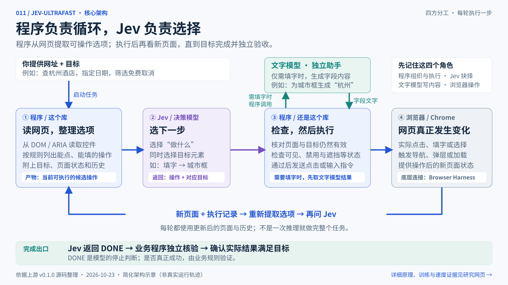

你的业务程序
提供网址、城市、日期、人数等要求，决定何时开始，并检查最后的页面是否真正满足条件。
程序从 DOM 列出可选操作，Jev 结合目标、状态与历史选下一步。
程序检查目标是否仍有效，再操作浏览器、读取新页面并继续循环；模型返回 DONE 后，由业务程序独立验收结果。
核心价值复用观察、决策接入、检查、执行、历史与停止条件，得到一套通用网页 Agent 运行骨架。
适合用来做什么搭建动态网页任务原型，或保持相同执行层，比较不同模型的选择质量与任务耗时。
看我们的研究结论与可扩展方向 ↓
能力的粒度点击哪个按钮、填写哪个输入框。
库的价值把模型判断接成持续运行的网页流程。
业务的责任定义目标，并独立验证实际结果。
业务、执行框架、模型与浏览器，各自有不同的责任。
提供网址、城市、日期、人数等要求，决定何时开始，并检查最后的页面是否真正满足条件。
连接浏览器、读取控件、组织问题、调用模型、检查并执行动作、保存历史，再启动下一轮。
Jev 选“做什么、对哪个元素做”；选到填字时，独立的文字模型才根据目标和字段生成内容。
底层连接浏览器、读取真实网页元素、发送鼠标和文字输入。编号背后对应程序观察到的 DOM 节点。
原版把 operation 与 click_target、type_text_target、适用时的 select_target 放在同一个请求里。选择“填字”时，只执行对应的填字目标。我们之前用 A/B/C 演示，是便于理解的简化表达。
每个问题都看到同一份页面状态；目标位于问题指令中。库每轮重新发送网页标题、网址、可见文字、控件及最近最多 10 条动作。
同一请求的多个问题并行评估，问题之间不依赖彼此的回答。下一步操作后的新页面仍需下一次请求观察；未公开内部每个选项如何计算。
用“上一轮 / 下一轮”观察页面状态、模型选择和程序执行如何配合。
下方酒店、价格和页面均为虚构。点击只切换本页示例，不访问酒店平台、不调用模型、不订房。目标停在“搜索筛选并打开详情”。
查杭州酒店，10 月 30 日入住、31 日离店，2 位成人，可免费取消，打开「清溪酒店」详情。
2026 年 · 示例条件STAY A LITTLE LONGER
选择入住日期
把旅行计划，变成下一次出发。
正在显示匹配结果
杭州 · 2 位成人 · 免费取消
¥ 425 / 晚，示意价格[7] 查看详情 ↗杭州 · 2026.10.30 — 10.31 · 2 位成人
✓ 当前示例展示可免费取消的条件
输入城市后才会出现联想结果；点击日期后才会出现日历。库每次从真实新页面生成候选，模型不能在第一轮就确定所有后续元素。
模型返回 DONE 是停止信号。你的程序还应独立检查城市、日期、人数、筛选和详情页。真实预订还需要额外的业务流程与验证。
网页内部有元素类型、名称、值和状态。程序读取这些信息，无需先让另一个模型“出题”。
<input type="text" placeholder="城市">
<button>搜索酒店</button>
<input type="checkbox"> 免费取消
<select>…成人数量…</select>input / textarea可编辑时 → 填字，也提供点击
button / a[href]常见按钮、链接 → 点击
select / option为可选的实际选项生成 SELECT
role / aria-*识别有语义标记的自定义控件
修改上方状态，观察右侧列表。
名称按 aria-labelledby、aria-label、关联 label、文字、title、placeholder 等规则提取，但并非完整的可访问名称标准。支持常见 HTML 与 ARIA 控件；排除 password、file、hidden 类型。候选控件中心点须位于当前视口；每快照最多保留 250 个底层动作，正文最多 6,000 字符。滚动、等待等由程序补充，DONE / BLOCKED 在模型请求中加入。
真正执行时会重新读取元素位置并检查遮挡；只读控件不生成填字操作，但仍可能保留点击。上面的实验只解释这一部分规则。
如果你自己实现同样的浏览器循环，最终能力可以一样。库的价值是复用已有代码与执行优化。
打开浏览器、读取页面、执行输入、记录历史、恢复失效状态等，仍由你的程序完成。
通用循环已经连接；酒店业务条件、特殊网站兼容和最终结果校验仍需补充。
| 工作 | 只使用 Jev API | 使用这个库 |
|---|---|---|
| 发现城市框、日期按钮等 | 自行读取与整理 | 已有 DOM 快照和动作空间 |
| 组织目标、页面和历史 | 自行设计请求 | 已有请求结构和最近历史 |
| 执行后观察、遇到失效重选 | 自行写循环和检查 | 已有基础循环与 freshness 检查 |
| 查看模型选择和耗时 | 自行记录与搭界面 | 已有本地 inspector 和轨迹 |
| 验证酒店是否符合条件 | 业务程序负责 | 仍由业务程序独立校验 |
| 适配登录、复杂控件和交易流程 | 自行实现 | 仍可能需要扩展，MVP 有限制 |
目标经常变化、页面需要逐步观察时，可用它做原型或模型比较基线。若已有成熟执行框架，主要参考它的页面快照、调用方式和延迟优化；固定且稳定的业务，也可以直接写确定步骤。
可复用的核心是一条“观察 → 选择 → 检查执行 → 重新观察”的闭环。模型负责有歧义的下一步，程序保留操作边界、执行记录与独立验收。
它的价值覆盖模型 API 之外的通用运行工作，适合作为网页 Agent 原型和模型比较基线。固定、稳定的任务可先评估脚本；真实站点兼容与完整业务交付仍要逐项验证。
保留网页状态和动作契约，增加决策适配器，接严格选项 ID 或候选分数；文字助手单独配置。模型输出必须映射到已观察到的动作。
验证：同一任务与执行层下，对比成功率、总耗时和无效步骤。
入口：snapshot.js ＋ browser.py
按类型补 iframe、Shadow DOM、嵌套滚动、标签页与日期控件的观察和操作路径，同时维护节点身份、当前状态与执行前检查。
验证：为每种控件准备本地页面，检查候选是否准确、动作是否生效。
区分页面失效、加载超时与无进展；增加有预算的重观测和重选。保存阶段检查点，恢复前先核对当前页面，避免重复执行已完成的操作。
验证：模拟加载延迟、遮挡和中断，检查能否继续且不重复产生副作用。
入口：业务程序对 Agent 的调用与返回处理
将“查询 → 筛选 → 打开详情”拆成可检查阶段；给每阶段定义输入、输出与结果校验器。DONE 后核对实际城市、日期、人数和政策，再决定下一阶段。
验证：故意放入不匹配结果，确保模型说完成时，业务仍能拒绝错误结果。
入口：本地测试页面、执行轨迹与 performance.md 的计时口径
固定任务、浏览器、模型版本、文字助手和验收条件，比较脚本、Jev 与替代模型；同时记录成功率、全程 p50/p95、无效步骤、恢复成本和每次成功任务费用。
验证：保留失败样例和完整轨迹，区分模型选错、网页识别、浏览器执行和业务条件问题。
建议起步：先用一个本地页面跑通目标与独立验收，再更换决策器做同任务对照，最后根据实际收益扩展真实站点与恢复能力。上述方向不代表已支持登录、订房或付款。
普通模型也能选择。Jev 是这个库采用的决策服务，它的训练和推理实现属于独立产品。
可以只输出 A/B/C，也能使用 JSON Schema 约束。短输出可减少生成等待，但仍有输入计算、推理和服务排队成本。
官方称采用专门架构、并行采样器及 RLCD 后训练。公开资料不足以确认基座、参数量、网络细节或完整损失与奖励公式。
官方称其优化目标是“经过校准的决策”：一批被赋予约 80% 概率的判断，希望实际发生比例也接近 80%。这是群体统计目标，不能保证单次判断正确。训练目标与推理计算方式也要分开：RLCD 解释优化方向，并行输出与执行优化解释延迟来源。
一条 Google Flights 轨迹，共 17 次请求。
初始页面观察之后，到模型 DONE。
相同模型设置，执行层优化比较。
| 证据 | 公布结果 | 应如何理解 |
|---|---|---|
| 航班任务优化对比 | 9.450 → 7.092 秒；浏览器协议调用中位数 1,092 → 101 | 前后同 Jev 1.13 + Mercury；各 3 次，属于同任务执行优化。 |
| Wikipedia 烟雾检查 | 2.798 秒，打开指定文章 | 单项示例，不是跨任务成功率基准。 |
| 本地酒店测试页 | 1.896 秒，搜索、筛选并打开酒店 | 本地 fixture，不代表真实酒店网站预订。 |
7.073 秒包含模型调用、文字生成、浏览器工作、失效决策与加载等待；不包含浏览器启动、首次导航和独立终检。两次文字生成约 $0.00006272，仅为文字助手费用，不是总任务费用。仓库没有同条件替换决策模型的完整比较，不能据此宣称比所有普通模型快多少倍。
Choice 返回所有选项的概率；confidence 是由分布计算的集中程度。官方 Choice 公式是 (pmax − 1/n) / (1 − 1/n)，并非某个答案的正确率。原库检查概率格式和最大值一致性，没有按 confidence 阈值自动拒绝执行。合法选项仍可能选错，模型 DONE 仍需独立验证。
原库的 Jev 接口不是通用 Chat API。需要改造 choose() 的请求和返回适配，并同步处理日志中的概率字段。
把合法“动作＋目标”绑定到候选编号，用 enum 或约束解码输出一个编号，再映射回真实动作。不需要从头训练。只设置“请输出 JSON”不能替代合法候选约束。
改推理接口 · 通用模型可做对一道题，使用在答案位置各为单 token 的 A/B/C 编号，直接读取下一 token 的 logits 并在候选中归一化。无需继续生成长回答；这是已有词表输出层的用法，不自动获得 Jev 的多问题并行能力。
可不训练 · 需要权重或分数访问分数表示对答案的偏好，不天然等于正确率。可用独立标注集做温度缩放等后处理；若总选错，则需要改进任务数据和选择能力。新增随机分类头一般需要训练；动态网页候选还需能读取每轮候选，不能只固定几类业务标签。
不要求从零训练，也不要求 RLCD它提供的是细粒度的点击、填字、选择、滚动与等待。更大的业务目标由这些动作组合完成。
给不同城市、日期、条件，让模型根据页面决定下一步。适用于能由常见 HTML 控件表达的任务。
酒店检索 / 航班查询 / 商品筛选根据名称和上下文寻找入口、打开文章或填写普通字段；仍需要业务信息与验收标准。
知识站查找 / 信息录入 / 页面导航学习 DOM 到动作的转换，比较不同决策器，定位模型、浏览器通信与页面加载各自的耗时。
Agent 原型 / 模型对比 / 延迟研究语言边界：TypeSafe 官方说明英语是主要训练语言，中文等 CJK 输入可接受，但准确性需要在自己的任务上另测。本页中文酒店流程是教学数据，不是中文模型能力实测。官方语言说明 ↗
下面是上游用法摘要。本研究页没有安装或运行上游 Agent，也不收集 API Key。
| 文件 | 读什么 | 对应疑问 |
|---|---|---|
| snapshot.js ↗ | 控件发现、名称、状态、动作和节点映射 | 程序怎么知道哪些能点、哪些能填？ |
| model.py ↗ | operation / target 问题、概率验证、文字助手 | Jev 到底接收什么、返回什么？ |
| agent.py ↗ | 预测、执行、重试、历史、停止预算 | 谁负责让流程持续跑下去？ |
| browser.py ↗ | 浏览器连接、实时位置、遮挡、输入 | 一个编号如何变成实际点击？ |
| questions.py ↗ | 规则、目标解释、文字输出约束 | 如何避免重复已满足步骤？ |
| performance.md ↗ | 计时口径、保留失败、支持范围 | 演示证明了什么？ |
git clone https://github.com/browser-use/jev-ultrafast.git
cd jev-ultrafast
git checkout 1231850a0bf1a0c0341fe408ef1668dbbfdfac46
uv sync
Copy-Item .env.example .env
# 在本地 .env 配置 TYPESAFE_API_KEY 和 TEXT_MODEL_API_KEY
uv run jev
# 打开 http://127.0.0.1:8766环境 Python ≥ 3.12；Chrome 通过 Browser Harness 连接。必要时运行 uv run browser-harness --doctor。
配置 Jev 决策使用 TypeSafe API。TEXT_MODEL_* 只控制独立文字助手；示例环境使用 OpenRouter / Mercury，源码缺省值另有不同，复现时明确固定环境。
复现 上游研究 commit 为 1231850a0bf1a0c0341fe408ef1668dbbfdfac46。官方 Models 页当前区分稳定别名与预览版；重现实验应固定实际版本。
from jev_ultrafast import Agent
# 替换成经你验证支持的真实网址；example.com 仅作占位。
with Agent(
"https://example.com/hotels",
"查杭州酒店，筛选免费取消，打开一家匹配酒店的详情。",
) as agent:
for state in agent.run():
print(state["elapsed_ms"], state["status"])
# 实际业务应另外检查城市、日期、筛选与打开结果。核心架构见顶部横图；网页正文展开酒店教学、候选生成、模型差异与适用边界。以下保留详细研究总图和底稿。资料核对日期为 2026-10-23，源码结论固定 commit。
架构回路、候选生成、六个理解转折、模型与训练、11 步酒店教学、三种实现对比、速度证据、使用场景与个人价值。
放大浏览详细研究总图 ↗
上游 README、核心源码、性能报告，以及 TypeSafe 官方模型接口与训练说明。
原创静态页面、酒店步骤演示、DOM 规则实验、完整 SVG 图与来源整理。
未实跑上游、未调用付费模型、未测试真实酒店预订，也未重现 Jev 的私有训练。
v0.1.0、MIT；核心循环、DOM 读取、模型请求与执行检查。
Google Flights、Wikipedia、本地酒店示例。保留范围限制与开发失败记录。
发布文章描述训练方向和并行输出；不等于完整公开模型实现。
支持直接读取 logits；vLLM 提供 choice / JSON 等输出约束。
概率校准与温度缩放的基础研究；并非 Jev 私有训练配方。
程序依据网页控件和规则生成候选。Jev 负责选择；只有填字操作选中后，文字助手才生成具体字段内容。
目标、页面状态、控件当前值和历史都是选择依据。同样的搜索按钮，在输入框空着和已经填写时，应该采取的操作不同。
库一次请求发送多个问题，拿到每个问题的概率和选择。它没有为每个选项单独发请求再投票；内部网络如何计算每个选项，未充分公开。
这个库由程序保存历史，每轮重新发送最近最多 10 条已执行动作。跨请求的连续性由调用方组织，不应假定服务自动记忆。
可以替换。使用 Jev 的理由要由同任务下的成功率、总耗时和成本决定；现有仓库测量不能证明它对所有任务优于普通模型。
不必。可以先做候选约束或直接读单 token 编号分数；需要可信概率时验证与校准，选择能力不足再微调。输出层变化不自动复制 Jev 的全部能力。
它是通用浏览器 Agent 的早期实现。上游酒店验证是本地 fixture 的搜索、筛选和打开详情。真实平台下单、登录、付款等需要额外适配与验证。
模型 DONE 只是模型判断。成功要检查实际页面或业务状态；可以把日期、路线、筛选条件、详情 URL 等写成独立检查器，像上游航班示例那样验收。